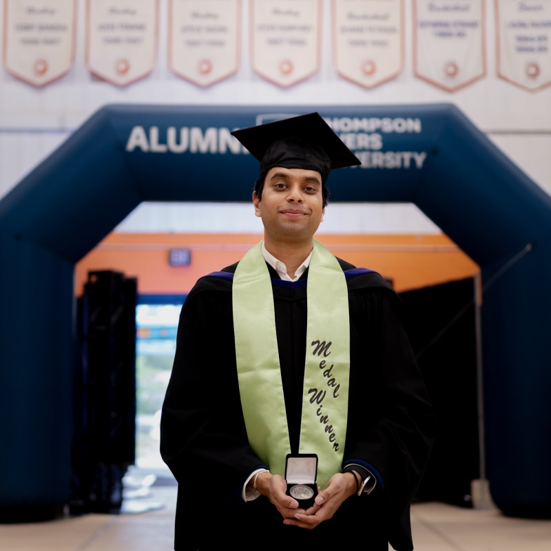
Hi, I'm Mushran Siddiqui
ABOUT ME
Hi, I’m Mushran (Moosh-run – think “moosh,” then run 🏃). I enjoy connecting ideas with real-world impact. My background blends environmental economics, engineering, and management, and I’ve always been curious about how data can shape better decisions.
During my Master’s, I worked on projects that turned analysis into outcomes, including mapping the carbon footprint of a local community-based business in Kamloops and contributing to research focused on improving employment outcomes for First Nations, Métis, and Inuit communities. Much of my work has been grounded in sustainability and community-oriented problem solving. Today, as a Training Coordinator in the construction industry, I see a different side of the work where plans and requirements have to be translated into clear, practical systems that crews can actually follow on site.
I’m especially interested in bridging that gap between analysis and application, taking complex sustainability challenges and turning them into something simple, useful, and real. Outside of work, I’m just as curious. You’ll find a bit of that in the Hobbies section, where I share the small things that keep me grounded and inspired.
CREDENTIALS
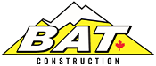
Training Coordinator
2026-Present, BAT Construction, Kamloops, BC
I recently joined BAT Construction as a Training Coordinator, supporting Human Resources, Learning and Development, Safety Compliance, and Operations. In this role, I coordinate in-person and virtual training programs focused on safety, compliance, and skills development to ensure workforce readiness across projects. I manage employee training records, track certifications and memberships, and evaluate program effectiveness to maintain alignment with company policies and legal requirements. I collaborate closely with managers to identify training needs, support onboarding initiatives, and improve participation and completion rates. I also serve as the primary contact for technology assets and training platforms, ensuring accurate tracking and documentation. Through structured coordination and attention to detail, I contribute to operational efficiency, safety performance, and project success across the organization.
Masters of Science (MSc) in Environmental Economics & Management (MEEM)
2023 - 2024, Thompson Rivers University, Kamloops, BC
This degree shaped my understanding of how economic systems, environmental policy, and sustainability practices interact in the real world. Through graduate coursework, applied projects, and research, I learned to analyze climate and energy trends, evaluate public policies, conduct cost-benefit and valuation studies, and interpret complex economic data. I gained experience using tools such as Excel, R, and environmental modelling frameworks like the Kaya Identity to examine emissions trajectories, ecosystem values, and community development patterns. My academic work included carbon forecasting, ecosystem valuation, SDG assessments, and community housing analysis, which strengthened my skills in quantitative evaluation, policy interpretation, and evidence-based decision-making. This program gave me a strong foundation in environmental economics, sustainability strategy, and data-driven analysis that continues to guide my work today.
TELUS Sustainability Research Fellow, Community Carbon Accounting Program
2023 - 2024, Thompson Rivers University, Kamloops, BC
As a TELUS Sustainability Research Fellow, I completed a full-cycle greenhouse gas (GHG) inventory for a local business using ISO 14064 and the GHG Protocol. I analyzed energy use, modelled emissions, and developed both heating and operational scenarios using empirical data, regression-based methods, and Monte Carlo simulations. Through this work, I identified major emission sources, quantified reduction pathways, and assessed the financial and environmental feasibility of transitioning to electric heating. I evaluated heat pump scenarios, lifecycle costs, and rebate frameworks, demonstrating that the business could significantly reduce emissions and achieve long-term savings. I also explored Scope 3 opportunities such as employee commute strategies and carbon-labelled menus. This fellowship strengthened my ability to combine data analysis, sustainability strategy, and economic evaluation into clear, actionable recommendations. It also gave me the opportunity to present findings to academic and industry partners, helping bridge technical research with practical, real-world climate solutions.

Sustainability Systems Analyst (Remote: Canada-based)
2020 – 2024, United International University (UIU), Dhaka, Bangladesh
I have been contributing to this research program since 2020, and since moving to Canada in 2022, I continued supporting the team remotely. In this role, I worked on projects that brought together sustainability, engineering, and data-driven problem-solving. I helped design and evaluated IoT-based agricultural systems, wireless sensor network (WSN) algorithms, and nutrition optimization tools that aimed to improve efficiency and support real-world decision-making. My work included developing sensor-driven irrigation models, testing clustering algorithms, and contributing to optimization frameworks shaped around regional diets, health conditions, and affordability. I also coordinated research planning, documentation, timelines, and communication across teams to ensure consistent, high-quality outputs. This experience strengthened my technical abilities, my project coordination skills, and my understanding of how technology and sustainability intersect in practical applications.
Graduate Research Assistant
2023 - 2024, Thompson Rivers University, Kamloops, BC
As a Graduate Research Assistant, I contributed to projects focused on sustainability, economic development, and Indigenous employment in Canada. I worked with large datasets, conducted econometric and statistical analysis, and supported academic writing, presentations, and literature reviews. This role strengthened my ability to interpret complex data, draw evidence-based insights, and communicate research clearly. I had the opportunity to explore topics such as AI and sustainable development, wage disparities, and labour market outcomes for First Nations, Inuit, and Métis communities. The experience deepened my understanding of policy challenges and helped me develop strong analytical, research, and documentation skills that continue to guide my work today.
Graduate Teaching Assistant
2023 - 2024, Thompson Rivers University, Kamloops, BC
As a Graduate Teaching Assistant, I supported undergraduate students in Microeconomics and Macroeconomics by explaining concepts, guiding assignments, and helping them prepare for exams. I held office hours, designed practice problems, and led review sessions that made the material more approachable for students with different learning backgrounds. This role strengthened my ability to communicate complex ideas clearly, work with diverse groups of learners, and support students in building confidence in their coursework. It was a meaningful part of my graduate experience and helped me grow both academically and personally
Graduate Diploma Business Administration (GDBA)
2022 - 2023, Thompson Rivers University, Kamloops, BC
This program strengthened my understanding of how organizations operate and make decisions. Through coursework in accounting, economics, marketing, human resources, and management, I developed practical skills in financial analysis, data interpretation, strategic planning, and organizational communication. I learned how business frameworks support sustainability efforts, policy evaluation, and evidence-based decision-making in real-world settings. The GDBA complemented my environmental economics studies by giving me a broader perspective on how businesses balance financial performance with social and environmental responsibilities. It helped me build a more integrated approach to analysis, research, and management.
Bachelor of Science (BSc) in Electrical & Electronic Engineering (EEE)
2013 - 2017, United International University (UIU), Dhaka, Bangladesh
My undergraduate degree gave me a strong technical foundation in electronics, circuits, communication systems, and applied engineering problem-solving. I learned to work with sensor networks, embedded systems, and automation concepts, which later supported my research in IoT-based agriculture and wireless sensor networks (WSN). The program strengthened my analytical thinking, mathematical skills, and ability to approach complex technical challenges with structured reasoning. This background continues to influence my work in sustainability and environmental research, especially in areas that connect engineering with data, optimization, and practical applications. It remains an important part of how I understand technology, systems, and real-world solutions.
SKILLS
Sustainability & Climate Action
GHG Accounting (ISO 14064, GHG Protocol)
Carbon Footprint & Lifecycle Assessment
Energy Transition & Policy Evaluation
Climate Action Planning & Sustainability Reporting
Research & Analysis
Econometric & Statistical Modeling
Cost-Benefit & Valuation Methods
Monte Carlo Simulation & Forecasting
Academic & Business Research
Project & Coordination Skills
Policy, Program & Project Development
Stakeholder Engagement & Communication
Documentation & Technical Reporting
Technical Tools
Excel
R
Power BI
Python
MatLab
CupCarbon
Network & Data
IoT & Wireless Sensor Networks (WSN)
Generative AI Applications
Data Visualization & Decision Support
PROJECTS
A Pathway Towards Sustainable Energy Transition
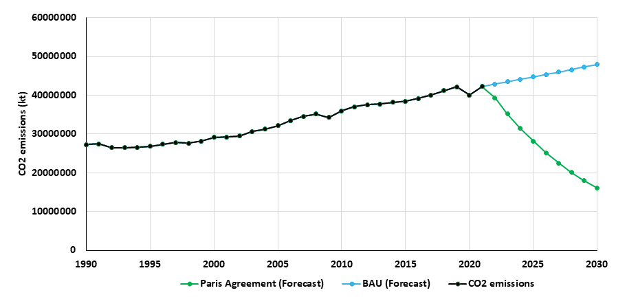
Using the Kaya Identity and datasets from IEA and Our World in Data, the study projected that a BAU pathway could exceed Paris Agreement limits by 2030. It assessed renewable energy cost reductions, sectoral emission contributors, and policy challenges, and recommended targeted actions including carbon pricing and clean-energy incentives.
Sustainable Community Economic Development
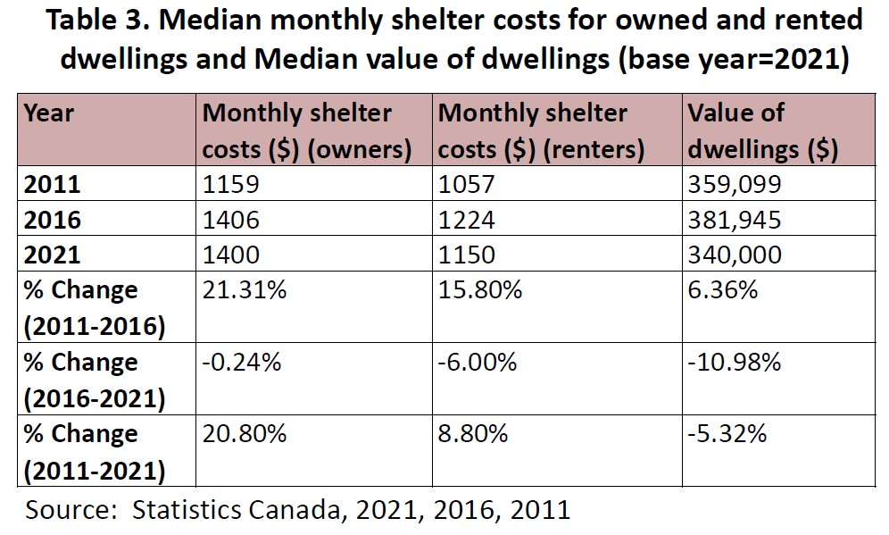
Used census data (2011–2021) to assess trends in affordability, income distribution, and demographics. Found a 20.6% rise in affordable housing access and a 10.1% increase in household income, but identified a sharp rise in homelessness as a critical policy concern.
Canadian Provincial Energy Efficiency Programs
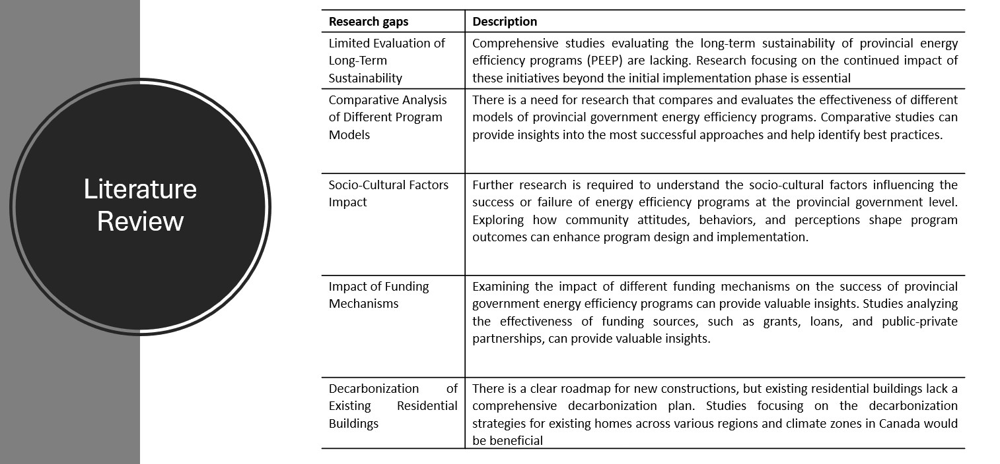
Analyzed interprovincial energy programs and used Kaya Identity to project Canada’s 2030 CO₂ emissions at 575.44 Mt under BAU, far above the Paris target of 288.10 Mt. Found RD&D investments improve efficiency, but unequal provincial funding threatens national climate goals.
Kaya Identity Climate Assessment – USA
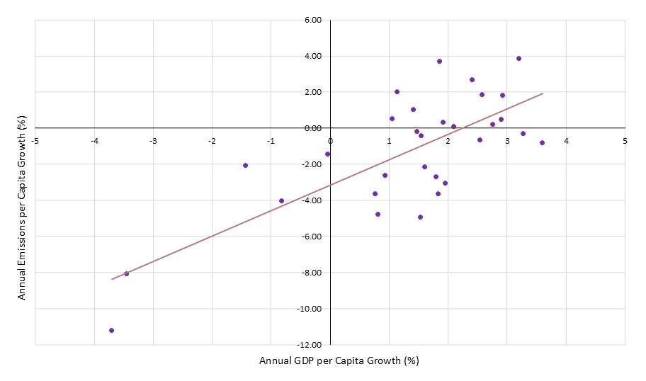
Used Kaya Identity to model long-term CO₂ emissions in the U.S. from 1990 to 2030. Applied Excel to analyze and visualize trends in GDP per capita, energy intensity, and carbon intensity. Identified a projected 27.72% emissions reduction by 2030, falling short of Paris Agreement goals, emphasizing the need for stronger mitigation policies. Conducted a 30-year quantitative analysis (1990–2020) of U.S. carbon emissions using the Kaya Identity framework, incorporating data from the World Bank and Our World in Data. Developed CO₂ emission forecasts through 2030 based on empirically computed annual growth rates of population, GDP per capita, carbon intensity, and energy intensity. Identified a projected 27.72% reduction in emissions by 2030 under business-as-usual trends, falling 30.83% short of the Paris Agreement target, highlighting gaps in national mitigation policy.
The Global Value of Natural Resources
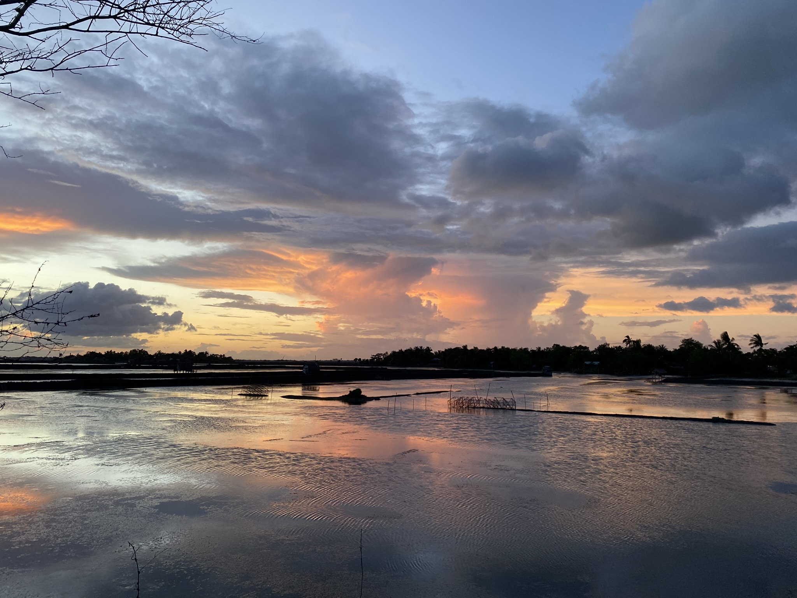
Analyzed 785 ecosystem valuation records using the ESVD database to assess global economic value of coastal wetlands. Found a 78.7% decrease in global wetland area since 1994 and highlighted urgent policy needs for ecosystem service preservation.
UN SDG Policy & Development Assessment
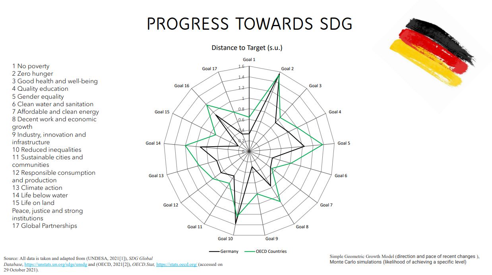
Mapped Germany’s performance across all 17 UN SDGs using Excel and OECD indicators. Compared progress with other OECD countries using standardized goal-distance metrics and identified key underperforming areas.
PUBLICATIONS
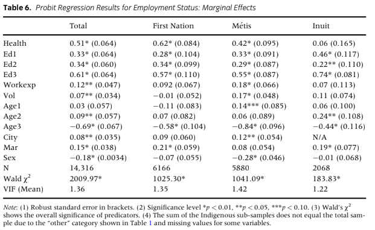
The Role of Work Experience Programmes in Shaping Employment Outcomes for Indigenous Peoples in Canada
In my recent research, I contributed to a study examining employment outcomes of First Nations, Métis, and Inuit communities in Canada using an expanded human capital framework. The study found that participation in work experience programmes increases the likelihood of employment by 12%, alongside the positive effects of education and health. The findings highlight the importance of experiential learning in shaping more effective and inclusive workforce development strategies.
View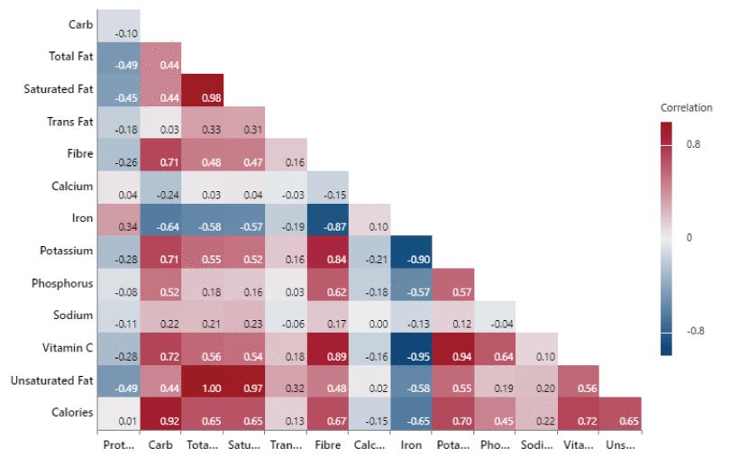
A Regionally Adaptable Nutrition-Centric Food Recommendation System (FR-RANC)
The FR-RANC system provides personalized dietary recommendations by integrating user data (age, health, socioeconomic status) with region-specific food databases. Unlike traditional tools that focus narrowly on a few nutrients, FR-RANC adapts to local food availability, economic conditions, and comprehensive nutrient needs. Tests showed ~90% compliance with macronutrient targets and strong alignment with micronutrient requirements across varied health conditions. The system also overcomes cold-start and scalability issues, making it a practical tool to promote balanced nutrition and reduce global dietary disparities.
View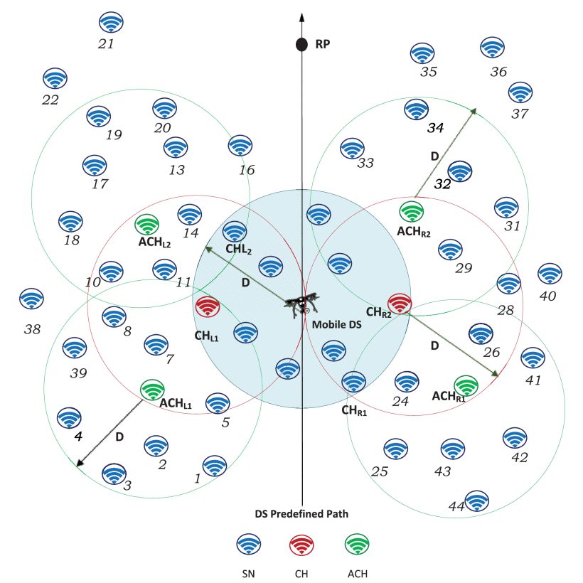
MHM-RTC: Multi-hop Mobility-based Real-Time Clustering Algorithm for Wide-area Wireless Sensor Network
The MHM-RTC algorithm enhances IoT-based wireless sensor networks by enabling real-time, mobility-aware clustering through LoRa communication between sensor nodes and a mobile data sink. Unlike traditional methods, it adapts dynamically to topology changes, optimizing energy use and coverage in large-scale mobile environments. Simulations showed up to 20% faster clustering, 37–53% greater node coverage, and 3.8–8.7% lower energy use compared to existing algorithms, making it a practical solution for efficient, wide-area WSN deployment.
View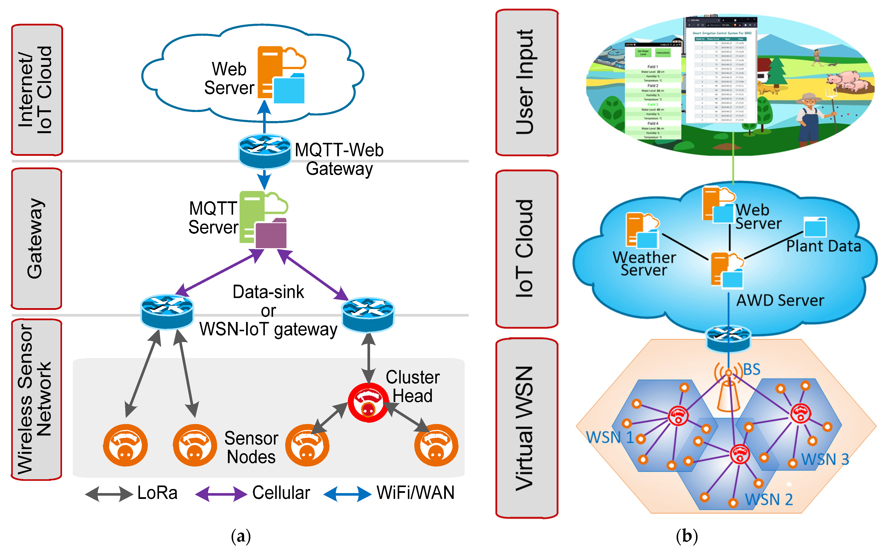
Dimensioning of Wide-Area AWD System for IoT-Based Automation
This research introduces an automated Alternate Wetting and Drying (AWD) irrigation system for large-scale rice farming using IoT-enabled wireless sensor networks. It integrates monitoring, control, and irrigation networks with real-time data such as weather forecasts and plant conditions to optimize water use. Simulations and field trials demonstrated scalability to 25,000 acres, reducing water loss through plastic piping, coordinating 250 pumps across 10 clusters, and ensuring efficient, low-cost irrigation in areas lacking cellular coverage.
ViewCERTIFICATIONS & AWARDS
Featured CBC Interview
Interviewed by CBC/Radio-Canada for a master's project on carbon footprint management as a TELUS Sustainability Research Fellow. Recognized by the Bob Gaglardi School of Business and Economics (2025).
ViewConference Presentation
Presented research on employment barriers among First Nations, Inuit, and Métis communities at the 4th Annual Environment & Sustainability Research Spring Workshop, Thompson Rivers University, May 2025.
ViewTri-Council Policy Statement (TCPS2): Core Certified
National research ethics certification, Canada, 2024.
People's Choice Award
First Place in Environmental & Natural Resource Economics Poster at the Financial Reporting and ESG Workshop, TRU (May 2024).
ViewBSc. Magna Cum Laude
Graduated with honors, recognized for academic excellence and contribution to research.
Volunteer – Unearned Assets Conference
Thompson Rivers University, May 29–30, 2024. Assisted in a 2-day event on privilege, anti-racism, and equity featuring keynote speakers Dr. Peggy McIntosh and Jesse Lipscombe.
ViewHobbies
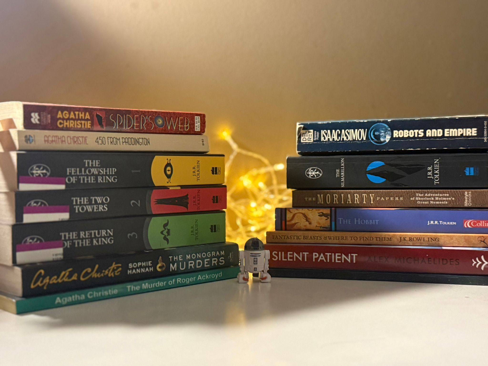
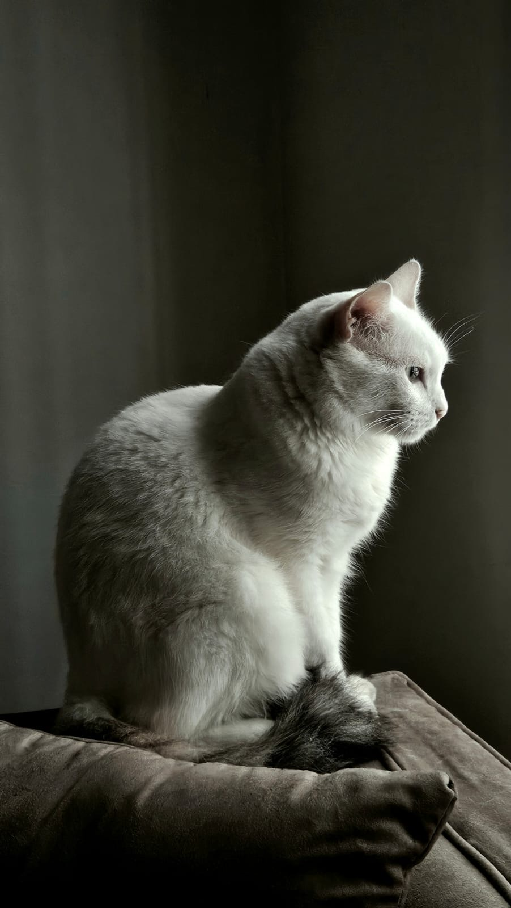
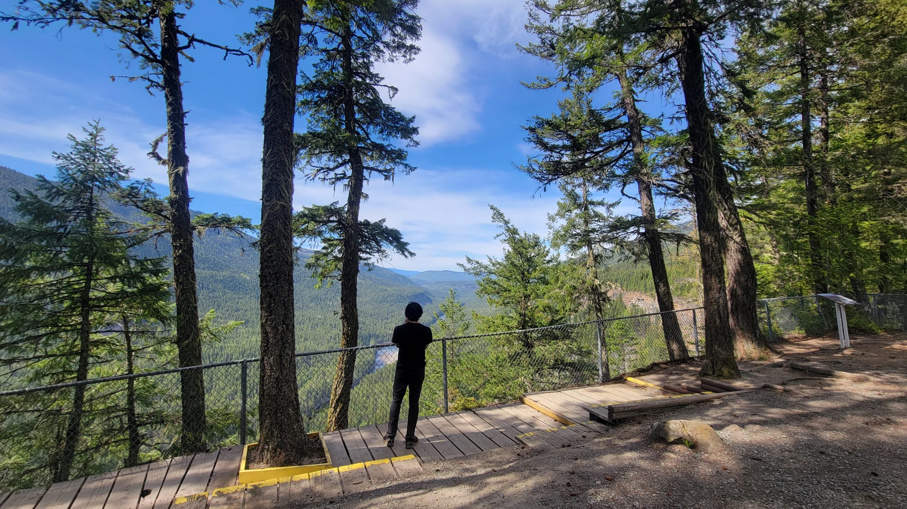
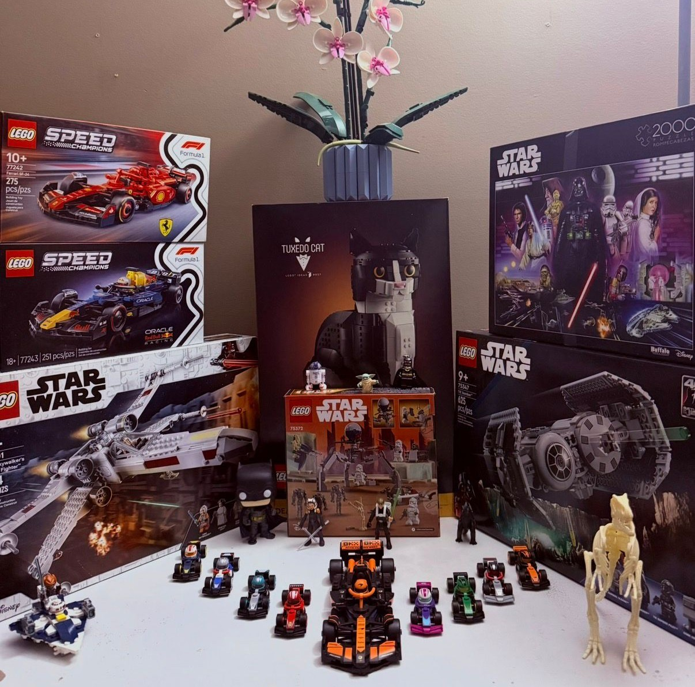
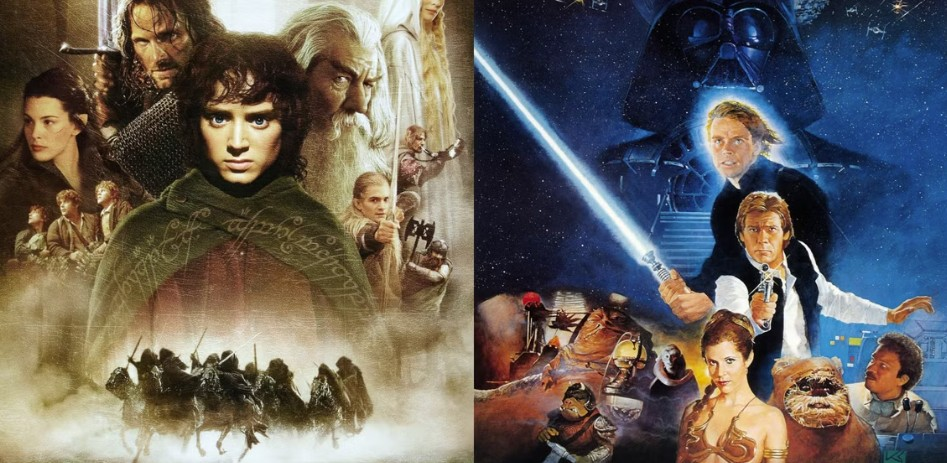